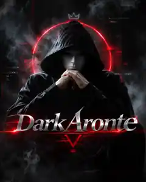

Cybersecurity
Protezione dei sistemi, analisi della sicurezza e strumenti diagnostici difensivi.

EST. 2010 · ADVANCED DIGITAL ENGINEERING
Software. Sicurezza. Innovazione senza compromessi.
Un'identità tecnologica indipendente dedicata alla progettazione di software, alla cybersecurity e allo sviluppo web professionale.
01 / DARK ARONTE
Dark Aronte sviluppa software e soluzioni digitali dal 2010, con attenzione alla sicurezza, alla ricerca e alla qualità.
02 / ENGINEERING
Protezione dei sistemi, analisi della sicurezza e strumenti diagnostici difensivi.
Applicazioni, utility e automazioni con attenzione a stabilità e manutenzione.
Siti moderni, veloci, accessibili e adattabili a ogni schermo.
03 / SOFTWARE CENTER
Calcola impronte SHA-256, confronta codici originali e identifica file identici. I tuoi documenti restano sul dispositivo. Gratuito, senza registrazione.
04 / DARK CONSOLE
Informazioni rilevate direttamente dal browser. Nessun file personale viene letto.
06 / CYBER KNOWLEDGE
Dark Aronte pubblica guide originali e documentate su navigazione sicura, phishing, passkey e protezione degli account. Senza allarmismi e senza promesse di sicurezza assoluta.
08 / DIGITAL MIRROR
Quanto conosci davvero la tua sicurezza digitale? Esplora le informazioni che il browser rende disponibili, riconosci gli inganni più comuni e scopri come proteggerti con azioni concrete. Un laboratorio gratuito, senza registrazione.